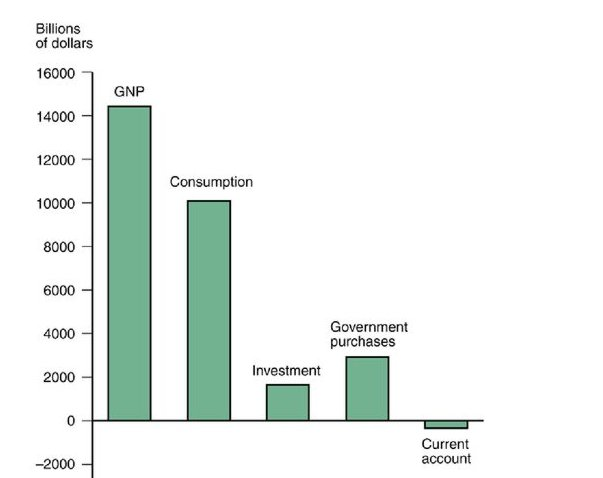

10 National Income Accounting and the Balance of Payments
We shift our focus and ask: How can economic policy ensure that factors of production are fully employed? And what determines how an econ omy’s capacity to produce goods and services changes over time? To answer these questions, we must understand macroeconomics, the branch of economics that studies how economies’ overall levels of employment, production, and growth are determined.
Macroeconomic analysis emphasizes four aspects of economic life that, until now, we have usually kept in the background to simplify our discussion of international economics:
Unemployment: We know that in the real world, workers may be unemployed and factories may be idle. Macroeconomics studies the factors that cause unemployment and the steps governments can take to prevent it.
Saving: In earlier chapters, we usually assumed that every country consumes an amount exactly equal to its income—no more and no less. In reality, though, households can put aside part of their income to provide for the future, or they can borrow temporarily to spend more than they earn.
Trade imbalances: As we saw in earlier chapters, the value of a country’s imports equals the value of its exports when spending equals income. This state of balanced trade is seldom attained by actual economies.
Money and the price level: The trade theory you have studied so far is a barter theory, one in which goods are exchanged directly for other goods on the basis of their relative prices. In practice, it is more convenient to use money—a widely acceptable medium of exchange—in transactions, and to quote prices in terms of money. Because money changes hands in virtually every transaction that takes place in a modern economy, fluctuations in the supply of money or in the demand for it can affect both output and employment.
10.1 The National Income Accounts
10.1.1 Gross National Product (GNP)
A country’s gross national product (GNP), the value of all final goods and services produced by the country’s factors of production and sold on the market in a given time period. To distinguish among the different types of expenditure that make up a country’s GNP, government economists and statisticians who compile national income accounts divide GNP among the four possible uses for which a country’s final output is purchased:
Consumption (the amount consumed by private domestic residents)
Investment (the amount put aside by private firms to build new plant and equipment for future production),
Government purchases (the amount used by the government), and
Current account balance (the amount of net exports of goods and services to foreigners).
Figure 10a shows how U.S. GNP was divided among its four components in the first quarter of 2016:

Why is it useful to divide GNP into consumption, investment, government purchases, and the current account?
One major reason is that we cannot hope to understand the cause of a particular recession or boom without knowing how the main categories of spending have changed. And without such an understanding, we cannot recommend a sound policy response.
In addition, the national income accounts provide information essential for studying why some countries are rich—that is, have a high level of GNP relative to population size—while some are poor.
10.1.2 Gross Domestic Product (GDP)
A country’s gross domestic product (GDP) is supposed to measure the volume of production within a country’s borders, whereas GNP equals GDP plus net receipts of factor income from the rest of the world.
Most countries other than the United States have long reported GDP rather than GNP as their primary measure of national economic activity. In 1991, the United States began to follow this practice as well. As a practical matter, movements in GDP and GNP usually do not differ greatly.
10.1.3 National Income Accounting for an Open Economy
We will see that in open economies, saving and investment are not necessarily equal, as they are in a closed economy.
- Consumption (C)
The portion of GNP purchased by private households to fulfill current wants is called consumption. Purchases of movie tickets, food, dental work, and washing machines all fall into this category. Consumption expenditure is the largest component of GNP in most economies.
Example: In the United States, for example, the fraction of GNP devoted to consumption has fluctuated in a range from about 62 to 70 percent over the past 60 years.
- Investment (I)
The part of output used by private firms to produce future output is called investment. Investment spending may be viewed as the portion of GNP used to increase the nation’s stock of capital. Investment is usually more variable than consumption.
Example: In the United States, (gross) investment has fluctuated between 11 and 22 percent of GNP in recent years.
- Government Purchases (G)
Any goods and services purchased by federal, state, or local governments are classified as government purchases in the national income accounts. Included in government purchases are federal military spending, government support of cancer research, and government funds spent on highway repair and education. Government purchases include investment as well as consumption purchases.
Example: Government purchases currently take up about 17 percent of U.S. GNP, and this share has fallen somewhat since the late 1950s. (The corresponding figure for 1959, for example, was around 22 percent.)
10.1.4 The National Income Identity for an Open Economy
In a closed economy, any final good or service not purchased by households or the government must be used by firms to produce new plant, equipment, and inventories.
This information leads to a fundamental identity for closed economies. Let Y stand for GNP, C for consumption, I for investment, and G for government purchases. Since all of a closed economy’s output must be consumed, invested, or bought by the government, we can write
\[Y = C + I + G\]
Residents of an open economy may spend some of their income on imports, that is, goods and services purchased from abroad, only the portion of their spending not devoted to imports is part of domestic GNP. The value of imports, denoted by IM, must be subtracted from total domestic spending.
The goods and services sold to foreigners make up a country’s exports. Exports, denoted by EX, are the amount foreign residents’ purchases add to the national income of the domestic economy.
The national income of an open economy is the sum of domestic and foreign expenditures on the goods and services produced by domestic factors of production. Thus, the national income identity for an open economy is
\[Y = C + I + G + EX - IM\]